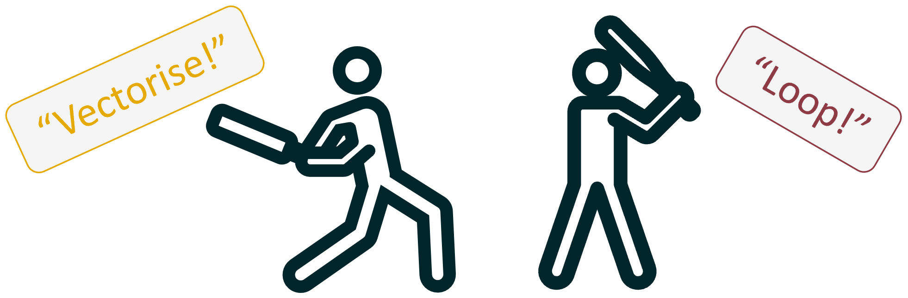

Code
our_numbers <- c(1:10)
our_numbers [1] 1 2 3 4 5 6 7 8 9 10January 29, 2025
Functions and for loops… If you haven’t read my blog posts on these two topics I will shamelessly self promote and say that you should. But honestly, I would like to think that the content written here can be understood without any prior knowledge. So please, read on if you want!
If you are not aware, the tension between vectorise functions and for loops is weirdly high. Some people say that vectorised functions are easier to read and understand, others swear that for loops are a more obvious and legible option. Some people prioritise processing time above all else and will create vectorised functions for everything, others say that in todays’ coding languages it really doesn’t make much of a different.
So which is it? What do I use? Why do I use it? The idea of my blog today to try and pull apart the differences between vectorised functions and for loops as they relate to my work. I will then dive deeper into how you can use vectorised functions, and code up some examples.
Okay so first of all lets just have a quick refresher on what exactly vectorised functions and for loops are exactly.
This is a bit of a weird analogy but you can think of a vectorised function almost like a shotgun. The idea is that all the actions are completed at the same time in one big boom (like how all the pellets in a shotgun fire at the same time). To do this, you take any “normal” function with the following structure your_function_name <- function(inputs){code} and place this inside a “special” vectoring function such as map() or lapply(). The special vectoring function does all the repetition of the normal function.
I will once again promote my functions blog, which will help you understand the “normal” function within the “special” vectoring function.
In contrast, a for loop is more like a chain-gun, with each action completed one after the other in rapid succession. In this analogy you take any “normal” function with the following structure your_function_name <- function(inputs){code} and place this inside the repeating for loop. The normal function is then repeated for each iteration of the loop.
You know where to go if you want to know more… for loops.

With a better understanding of the idea behind each method, we can now summarise some of the main similarities and differences that exist in practice;
Similarities:
Differences:
Sometimes its just easier with some practical examples: lets pretend that we have a vector of numbers from 1 to 10 that each need to have 1 added to them. (Yes I know we don’t actually need a vectorised function or for loop to do this, but lets pretend we do).
So how would this look in a for loop?
First we have our numbers:
Then we have our loop:
And then our output:
To contrast, here is the vectorised function. First we would create our numbers (we did that above), then we have the vectorised function:
And our output:
Identical outputs, as expected.
Comparing the two side by side in this way confirms our early observations, and tell us more. For example, I stated above that I find vectorised functions to be more vague, and in this example it seems to be the case. Looking at the code it is not at all clear what the function map_int() does, nor how our_numbers and + 1 interact with each other, and what the hell is that \(x) doing there? In contrast, the for loop might take a few more lines of code, but it is probably a bit easier to understand that the code is meant to do something a few times in a row, even if you can’t quite pick what exact it is.
Okay so to recap, we have a general understanding of how vectorised functions and for loops work, and have looked at a super simple example of this. Further, if you want to learn more about making your own for loops or functions I have blogs for that. What we haven’t covered yet (or in another blog), is the nitty gritty of how a vectorised function works… so I guess that is the focus now!
To start off with, a “vectorised function” is a function that takes a vector as an input and runs a function for each element in the vector. In the analogy above we talked about a shotgun, and in the diagram (also above) you can see that func has been duplicated within map. In both cases the idea is that the function is applied multiple times without needing to write the code multiple times, or write a for loop.
There are two main methods of vectorising a function, both methods have three key elements:
The only difference between the two methods is the third element, the vectorising function. The first method uses base R - that is to say you don’t need to install and R packages. In the first method the vectorising functions come under the “apply” family, such as lapply(), mapply(), and vapply(). For the second method you need to install the “Purrr” package (yep, triple r), which gives you access to the “map” family of functions, such as map(), map2(), and map_int(). As you can probably already tell from my early example, I prefer using the Purrr package. I find that the function names make more sense, and there are a lot more things you can do with the functions.
As with most topics I have written about, I would highly recommend that you check out the webpage written for the Purrr package. It has excellent documentation and some basic examples that cover the major use cases you would expect to encounter.
The basic syntax of a purrr mapping function is as follows:
map(vector, function)map(vector, \(x) x + 1)map(vector, \(x) function(x))As well as some older methods that are no longer actively recommended, but that you might find in old code:
map(vector, ~ .x + 1)map(vect, ~ function(.x))You will note that I have written more than one example of the syntax, this is not a mistake. Annoyingly there are multiple “correct” ways to write the code depending on the situtation… Yea I know. I’ll do my best to explain each one.
Syntax: map(vector, function)
Summary: no explicit designation of x and y, but does have a named function.
The first argument in the map function is always our vector. This is then always followed by a comma no matter what. Finally we write the function that we want to repeat a bunch of times. IMPORTANT! In this syntax the function we are repeating does not have any brackets after it.
This option is the most streamlined choice. It has very little moving parts and thus very little that you can write incorrectly. However, the downside of using this method is that you need to be familiar with the map() function otherwise it is really not clear what the code is doing. There are two addition downsides to this method that mean it is not always the right choice:
mean(), sum(), etc. Or a custom function that you have written and given a name.map() assumes that the first argument in the function you want to repeat is where the vector should go, if the vector needs to go somewhere else you will have to use a different syntax.As an example
[1] 1 2 3 4 5 6 7 8 9 10I’m using the map_int() function simply because I want the output to be an integer, the syntax for map_int() is the same as for map().
Syntax: map(vector, \(x) x + 1)
Summary: for anonymous (not named) functions that are simple.
The first argument in the map function is always our vector. This is then always followed by a comma no matter what. In this option we then write \(x), this is essentially saying that from this point on the vector is now “x”. We follow this up by writing the code we want to apply to the vector such as adding 1 to the each element in the vector, which looks like x + 1. IMPORTANT! In this syntax this is no comma between \(x) and the code you want to apply.
This option is great when the thing you want to do to the vector does not have a pre-existing function. An additional benefit of this option is that it is one of the clearest ways to demonstrate what is happening to the vector. However, this option is not always the best choice if the thing you want to do to the vector is super complicated and take several lines of code to write. If that is the case, I would recommend writing your own custom function that encapsulates the things you want to do, and then providing this custom function to map using option 1 or 3.
The “x” in \(x) x + 1 is just a placeholder. If you really wanted to, you could write \(cashew) cashew + 1 and it would work fine. However, you can’t change the backslash, brackets, or lack of comma.
Example 1:
Example 2:
Syntax: map(vector, \(x) function(x))
Summary: for custom functions and/or functions that need strong control over where x goes
The first argument in the map function is always our vector. This is then always followed by a comma no matter what. Once again we then write \(x), which is saying that from this point on the vector is now “x”. This is then followed by a named function, that includes brackets, and within the brackets you place your “x” which looks like: function(x). IMPORTANT! In this syntax this is no comma between \(x) and the code you want to apply.
This final option is the most verbose, but most robust method of writing a map function. This option is useful when you need to be very specific about where x goes in your repeated function. For example, if x is meant to be the second argument for some reason. There are no real downsides to this method, and it can technically be used in any scenario, but in a lot of cases you will find that it is overkill.
Here are a few demonstrations of the benefits of this option, first we need to create a custom function where we deliberately want x to be the second argument:
Then, if we don’t explicitly put x as the second argument (i.e. if we were to try and use syntax option 1) we would get this error:
Error in `map_int()`:
ℹ In index: 1.
Caused by error in `.f()`:
! argument "b" is missing, with no defaultSo instead, we use syntax option 3 and directly tell “x” where it needs to go and that it is the second argument:
And as a bonus, our custom function also allows us to change how much is added to each element by changing the first argument:
Hopefully those above examples made sense, if not we will be working on another more realistic example further below. But before we do I want to take a slight detour to touch on an important additional feature of Purrr called map2()!
Lets set the scene, imagine you have a vector of number just like we did above. And for this vector of numbers you want to add something to each one, just like we did above. Except this time, the thing you want to add to each number in the vector is different every time! How are we going to do that? I’ve spoiled it already, but of course we would use map2() (the “2” means it takes two vectors or lists). Thankfully, the syntax is not very different from the normal map(), here is a quick example:
[1] 11 11 11 11 11 11 11 11 11 11What if you have more than two vectors/lists? You can use the pmap() functions.
Right enough dilly dallying, lets take a look at a real example of a vectorised function (not some silly example where we just add 1 to some numbers).
Here’s the scenario, you are a spatial data analyst and your boss has asked you to download a series of datasets, and manipulate the data for analysis. These datasets are raster objects, and they are very large. Normally, these two characteristics would mean that you, an experience spatial data analyst, would stack each of the raster objects “on top” of one another, making a single multi-layered raster object. (This is an efficient data storage and handling method). However, each dataset is in a different place in the world, and an important part of raster data is that it can only be stacked into a multi-layered raster object with rasters that share the same location and dimensions. Without the ability to stack all of the raster datasets together you would have to analysed each of the rasters one at a time and repeat your code!
Not to worry, you (a wise and well traveled spatial data analyst) have experience working with vectorised functions, and know the perfect work around to this conundrum. Lets get to work.
I have pre-prepared some data for us to use, lets make a object that lists the names of each of the datasets we want to open.
As you know (because you are a talented spatial data analyst), you can you put almost anything you want into a list in R. Using this knowledge we are going to load each of the raster datasets into a single list.
#ironically we need to use a loop to load Rdata objects (quirk of the fucnction)
for (i in rasters_to_open){load(i)}
#before putting the datasets into a list
list_of_rasters <- map(str_remove_all(rasters_to_open, ".RData"), get)
#for gpkg objects we can directly open and put into a list
list_of_crops <- map(crops_to_open, st_read)Reading layer `dt' from data source
`C:\Users\adams\Documents\GitHub\website\posts\loops_and_vectorised_functions\example_crop_1.gpkg'
using driver `GPKG'
Simple feature collection with 1 feature and 0 fields
Geometry type: MULTIPOLYGON
Dimension: XY
Bounding box: xmin: 146.2958 ymin: -19.30559 xmax: 148.2985 ymax: -17.62597
Geodetic CRS: GDA2020
Reading layer `wt' from data source
`C:\Users\adams\Documents\GitHub\website\posts\loops_and_vectorised_functions\example_crop_2.gpkg'
using driver `GPKG'
Simple feature collection with 1 feature and 0 fields
Geometry type: POLYGON
Dimension: XY
Bounding box: xmin: 145.346 ymin: -18.898 xmax: 147.2067 ymax: -15.19529
Geodetic CRS: GDA2020
Reading layer `mwi' from data source
`C:\Users\adams\Documents\GitHub\website\posts\loops_and_vectorised_functions\example_crop_3.gpkg'
using driver `GPKG'
Simple feature collection with 1 feature and 0 fields
Geometry type: MULTIPOLYGON
Dimension: XY
Bounding box: xmin: 147.7533 ymin: -22.17852 xmax: 151.3289 ymax: -18.58484
Geodetic CRS: GDA2020Ha! Look at that, we already had to use a vectorised function ;)
With the data ready in a list, all we have left to do is decide what function we want to apply. In this example there are a few things we want to do:
Lets quickly write that custom function:
replace_with_na <- function(raster_dataset, crop_dataset){
#replace values greater than 200 with NA
raster_dataset[raster_dataset > 200] <- NA
#change the crs of the dataset and crop the dataset to the area of interest
raster_dataset <- raster_dataset |>
st_transform("EPSG:7844") |>
st_crop(crop_dataset)
#extract just one day from the multiyear dataset (for demonstration purposes)
raster_dataset <- raster_dataset[,,,,1]
#return the object
return(raster_dataset)
}And now we can put that custom function to work!
Done!
Lets take a look at what we just did by putting each of the datasets into one map, I’ve coloured each location differently:
tm_shape(output[[1]]) +
tm_raster(col.scale = tm_scale_continuous(values = "brewer.greens")) +
tm_shape(output[[2]]) +
tm_raster(col.scale = tm_scale_continuous(values = "brewer.blues")) +
tm_shape(output[[3]]) +
tm_raster(col.scale = tm_scale_continuous(values = "brewer.oranges")) +
tm_layout(legend.show = F)Pretty cool.
As you can see, by using vectorised functions we made the entire workflow of getting the data, manipulating the data, and mapping the data take less than 20 lines of code. This is the power of vectorised functions - clean, efficient, effective code.
Thats all for now!
Learning to write vectorised functions can be a wild ride, and a lot of the time it can feel almost impossible to understand what is going on (trust me I know). Make sure to stick with it, and remember to always take a random internet stranger’s opinion with a grain of salt. If the things I say here don’t make sense or click for you, check out other educational resources for alternative teaching styles.
Also, don’t over do it with your new power! It is often cleaner and simpler to write two or three separate vectorised functions rather than one complicated one. Future you will thank you for the compartmentalization when you come back to the work in a years time.
If you like the content, please consider donating to let me know. Also please stick around and have a read of several of my other posts. You'll find work on everything from simple data management and organisation skills, all the way to writting custom functions, tackling complex environmental problems, and my journey when learning new environmental data analyst skills.
A work by Adam Shand. Reuse: CC-BY-NC-ND.
adamshand22@gmail.com
This work should be cited as:
Adam Shand, "[Insert Document Title]", "[Insert Year]".